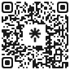

Vídeos criativos e envolventes
Tire seu projeto de ter um canal do papel e aprenda técnicas para produzir vídeos com qualidade para as redes sociais.
O podcast que te ensina a dominar todas as telas.
QR Filme é um curso gratuito de audiovisual distribuído pela cidade através de QR Codes. Escaneie, coloque os fones e aprenda onde estiver.
Gratuito, aberto e feito para aprender na cidade

Escaneie para ouvir
o primeiro passo.
[ 01 ] Sobre o projeto
O QR Filme é uma experiência de formação cultural acessível que busca democratizar o acesso ao conhecimento sobre o audiovisual por meio de episódios em formato de podcast, disponibilizados gratuitamente através de cartazes com QR Codes instalados em espaços da cidade, como comércios, restaurantes, praças e escolas.
A proposta nasceu da compreensão de que o audiovisual está presente no cotidiano de todas as pessoas e não apenas daqueles que desejam atuar profissionalmente na área.
Atualmente, produzir vídeos tornou-se uma ferramenta importante para a comunicação, educação, empreendedorismo, expressão artística, registros da memória e compartilhamento de conhecimento.
Nesse contexto, o QR Filme aproxima a população desse universo por meio de uma linguagem simples, acessível e gratuita, permitindo que qualquer pessoa possa aprender utilizando apenas o próprio celular.
Ao escanear o QR Code, o público acessa uma playlist de episódios curtos, gratuitos e em linguagem acessível. Cada episódio foi desenvolvido para te fornecer uma experiência clara e imersiva.
[ 02 ] Para quem é
O QR Filme foi pensado para quem deseja aprender audiovisual de forma prática, acessível e sem complicação.
Não importa se você nunca gravou um vídeo ou se já produz conteúdo. Os episódios apresentam diferentes aspectos do universo audiovisual de maneira simples, despertando a curiosidade e mostrando que esse conhecimento pode transformar ideias em projetos reais.
Para transformar ideias em vídeos mais claros, criativos e envolventes.
Para apresentar produtos e serviços com uma comunicação que conecta.
Transforme ideias em projetos culturais, registros audiovisuais e novas formas de expressão.
Para descobrir o audiovisual e dar os primeiros passos com autonomia.
Para levar novas ferramentas de ensino e expressão para suas comunidades.
[ 03 ] O que você será capaz de criar?
Ao longo dos episódios, você desenvolverá uma nova forma de olhar para o audiovisual e entenderá como ele pode fazer parte do seu cotidiano.
O conhecimento adquirido poderá ser aplicado em diferentes contextos, permitindo que cada pessoa dê vida às suas próprias ideias e projetos.
Tire seu projeto de ter um canal do papel e aprenda técnicas para produzir vídeos com qualidade para as redes sociais.
Descubra como utilizar o audiovisual para divulgar seus produtos ou serviços e fortalecer o seu negócio.
Crie vlogs e registros com uma comunicação atraente.
Transforme ideias em projetos culturais, registros audiovisuais e novas formas de expressão que trarão mais oportunidades de se posicionar no mercado criativo.
Encontre novas possibilidades para utilizar o audiovisual como ferramenta de ensino e comunicação.
Aprenda as habilidades para que você consiga se destacar no mercado a partir das habilidades que você já possui.
Entre no universo do cinema, festivais e da produção audiovisual.
Dê os primeiros passos no universo do cinema, da comunicação e da produção audiovisual.
1 / 3
[ 04 ] Por trás do projeto
O QR Filme é um projeto idealizado por Lai Costa, cineasta e estrategista de conteúdo com mais de 10 anos de atuação no mercado audiovisual.
A partir da fundação da Respirar-te, a trajetória de Lai une cinema, educação e criação de conteúdo digital, com foco em tornar o audiovisual mais acessível, prático e conectado com a realidade das pessoas.
O QR Filme nasce dessa interseção entre experiência prática no cinema e o desejo de tornar o aprendizado audiovisual para fora das salas de aula, ocupando a cidade como espaço de educação, arte e cultura.
A execução envolve uma rede de profissionais reunidos para levar o aprendizado para além das salas de aula, ocupando a cidade como espaço de educação, arte e cultura.
O projeto é uma realização da Respirar-te e integra ações viabilizadas através da Política Nacional Aldir Blanc (PNAB), fortalecendo iniciativas culturais independentes e o acesso descentralizado à formação artística.
Mais do que um curso, o QR Filme é uma experiência imersiva de aprendizagem urbana que conecta pessoas, cidade e a linguagem audiovisual.
[ 05 ] Como funciona
Encontre um cartaz do QR Filme espalhado pela cidade.
Aponte a câmera do celular para o QR Code e abra o link.
Acesse a versão em áudio ou o conteúdo com legenda descritiva.
Ouça episódios curtos onde e quando quiser.
[ 06 ] Acessibilidade
Ambos os formatos estão disponíveis gratuitamente no mesmo ambiente digital, promovendo inclusão, autonomia e democratização do conhecimento.
Versão imersiva em formato de podcast tradicional
Adaptada para pessoas surdas e ensurdecidas.
[ 07 ] Objetivos
Oferecer acesso livre ao aprendizado audiovisual.
Despertar o pensamento crítico, criativo e autoral.
Transformar espaços públicos em ambientes formativos.
Apresentar conteúdos em linguagem simples para quem está começando.
Valorizar a rua como espaço cultural vivo.
Oferecer acesso sem login, cadastro ou barreiras desnecessárias.
[ 08 ] Onde encontrar
A cada quadra, uma sala de aula. Procure pelos cartazes em:
Última chamada
Escaneie o QR Code e faça parte dessa experiência.